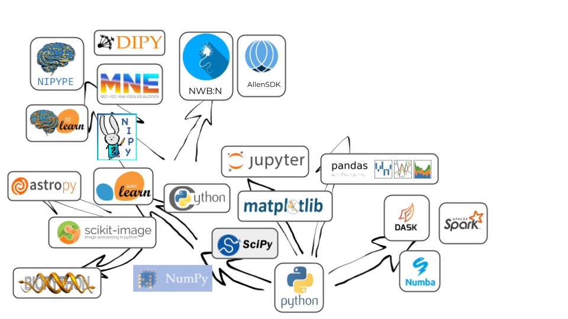
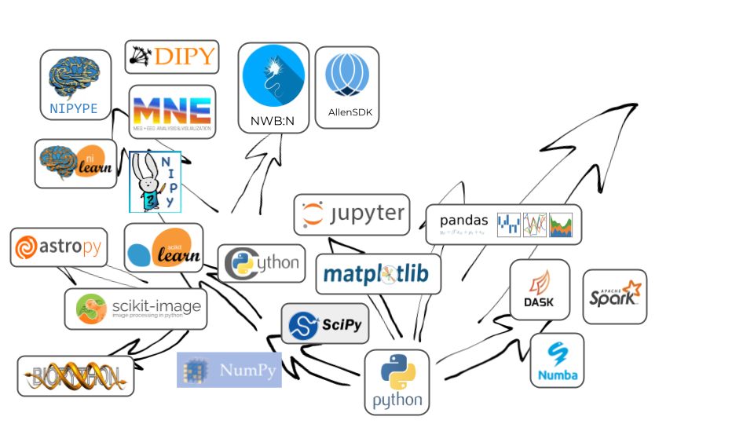
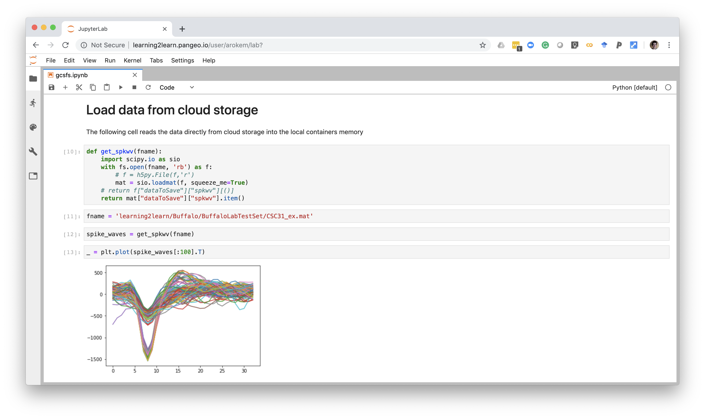

PanNeuro: leveraging a community-based approach for big data neuroscience
April, 2019
Ariel Rokem
The University of Washington eScience Institute
Follow along at:


Data-driven Neuroscience
Large
Multi-scale
Computational and circuit mechanisms underlying rapid learning
NINDS/NIH U19 funded through the BRAIN Initiative
Learning to learn

Data types:
Behavioral results
Non-human primate multichannel recordings
Human grid and electrode recordings
Model and simulation results
Data volumes:
~5-20 TB/week at steady-state
=> ~1-2 PB to store at steady-state
~10%-20% of that needs to be routinely accessed
Challenges of data-driven neuroscience
Large computational resources required
Statistical methods and algorithms need to be adjusted
Collaboration
Reproducibility
What are the requirements?
Bring the compute to the data
Scalable computing
Provide useful tools and interfaces
Facilitate interoperability (between datasets, between software libraries)
Control access
Package into a reproducible unit
Inspiration from other fields of science
Big data in the geosciences
Big data in the geosciences
A community platform for Big Data Geoscience
Open-source scientific computing tools and large open datasets on cloud computing served through the web-browser
Why use the cloud?
Instant access to data and computing
Access control
Data and compute are centralized
Minimal data transfers
Portable and reproducible
Reproducibility in the age of computational science
"An article about computational result is advertising, not scholarship. The actual scholarship is the full software environment, code and data that produced the result."
Scientific computing in Python
Python: an ecosystem for scientific computing
Free and open source
High-level interpreted language
Very wide adoption
Both in academic research and in industry
Scientific computing in Python

Scientific computing in Python
Scientific computing in Python
Scientific computing in Python

Scientific computing in Python

Scientific computing in Python

Scientific computing in Python

Scientific computing in Python

Scientific computing in Python

Scientific computing in Python

Scientific computing in Python

Scientific computing in Python

Scientific computing in Python

Scientific computing in Python

Scientific computing in Python

Scientific computing in Python

Scientific computing in Python

Scientific computing in Python

Scientific computing in Python

Scientific computing in Python
Scientific computing in Python
Scientific computing in Python

Scientific computing in Python

Scientific computing in Python

Scientific computing in Python

Interactive computing through the web browser
Awarded the 2018 ACM Software System Award
The Jupyter notebook

Demo
Demo video
Binder demo
Barriers to adoption
Concerns about cost
Reluctance to share data
New skills required
The tools are rapidly evolving
Data formats and data standardization
BIDS: a scientist-friendly data standard
The team

Thanks!
Pangeo is also supported by
Contact information